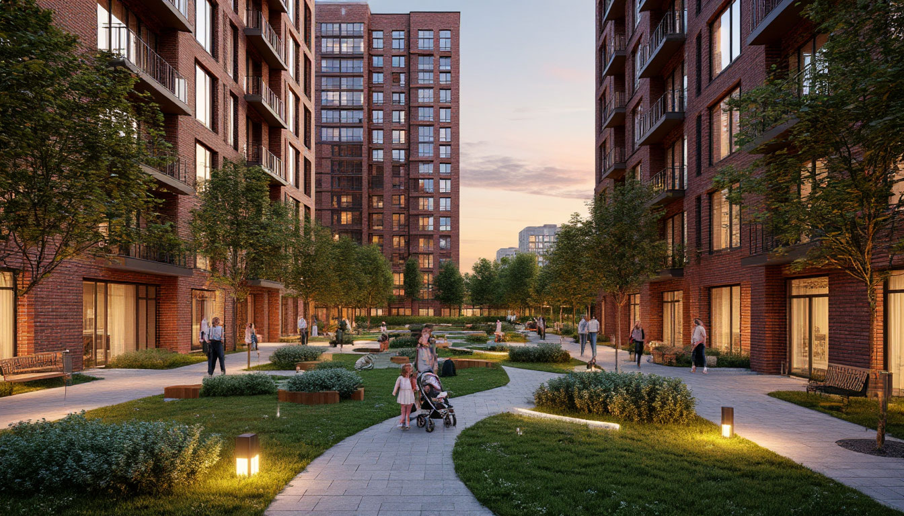
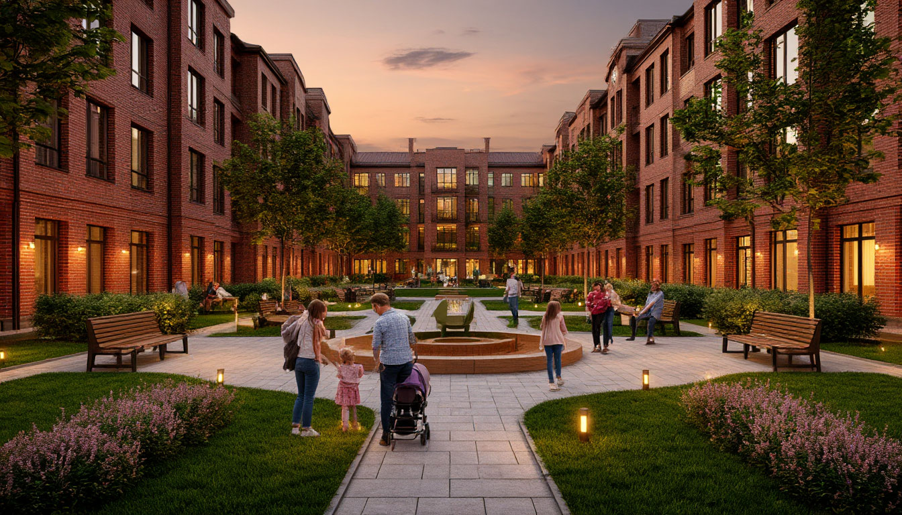
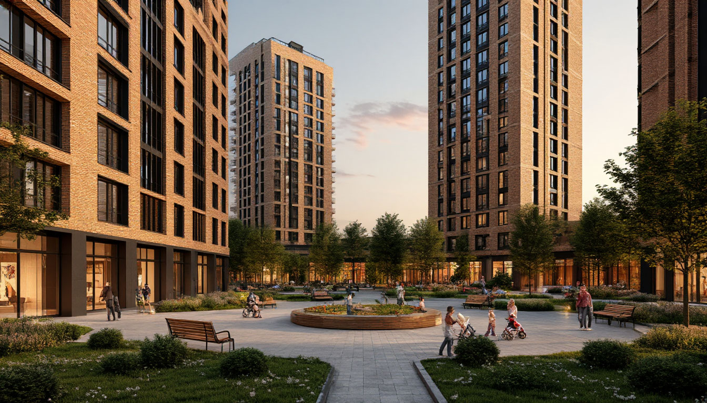

АКТИОНСтроительство· Высшая инженерная школа← Все шаги
ФОТО
Евгений Эрман, к.т.н.
руководитель Лаборатории ИИ-решений девелоперской компании «РАЗУМ»
Автор урока
Курс «30 шагов: рабочий ИИ-инструмент для строителя» · Неделя 3 · Шаг 21 · Роль: ГИП / архитектор-концепт / маркетинг
Шаг 21. ИИ-графика 2: картинка под задачу
«Сухой» рендер дома — это ещё не картинка, которая продаёт и убеждает. Оживим сцену людьми и средой, приладим один и тот же визуал под три разные задачи — и научимся отличать хороший рендер от бракованного. ИИ-графика — концепт и коммуникация, а не проектное решение.
Ассистент · Уровень 2 · библиотека промптов⏱ 15–20 минут🎓 Уверенный
⚙ Для переноса в платформу Актион
Платформа подставляет роль пользователя автоматически из профиля (П-4 «выбор роли» из требований к разработке) — строка «Роль: …» выше должна обновляться без правки HTML урока.
📄 К уроку приложены: три демо-рендера двора «Уютного дома» (без людей / с людьми / в едином стиле для презентации), промпт-пак блока графики (Г4–Г6) и чек-лист проверки рендера перед использованием.
1 · Зачем это нужно
Рендер, который продаёт, — не то же самое, что рендер, который просто есть
На Шаге 20 вы получили первый рендер фасада «Уютного дома» по описанию ТЭП — технически корректную, но «сухую» картинку: дом стоит, дом виден, и всё. Такая картинка годится для внутреннего обсуждения материалов фасада, но не убеждает покупателя и не работает на слайде защиты проекта.
Разница — в двух вещах: жизнь на сцене (люди, благоустройство, свет) и адаптация под конкретную задачу (один и тот же дом выглядит по-разному на баннере, в отчёте и на слайде презентации). Сегодня добавляем оба навыка — и учимся отличать рабочий рендер от того, который стыдно показывать заказчику.
💡 Зачем это вам: один хорошо приготовленный визуал экономит часы дизайнера и участвует сразу в трёх документах — слайде защиты, баннере и отчёте — вместо трёх отдельных заказов.
Что важно помнить
ИИ-рендер двора — это концепт для коммуникации, не благоустройство по проекту. Реальные МАФы, деревья и покрытия — по документации.
Люди на сцене — обобщённые персонажи, не реальные жители и не узнаваемые лица. Это не только этика, но и требование к сгенерированным изображениям.
Каждый рендер перед использованием проходит проверку на артефакты — экран 5 этого урока показывает, что именно смотреть.
2 · Люди и среда (Г4)
Оживляем двор: от «сухого» рендера к сцене
Сквозной пример — двор ЖК «Уютный дом на Матвеева»: концепция «двор без машин», детская площадка, благоустройство. Базовый рендер технически верный, но пустой. Добавляем людей и вечерний свет — и двор начинает «продавать» идею комфортной жизни.

Двор без людей — базовый рендер благоустройства, технически верно, но «пусто».

Тот же двор с жителями, детской площадкой и вечерним светом — сцена «продаёт» идею комфортной жизни.
Что добавили в промпт
К базовому описанию двора («двор без машин», детская площадка, скамейки, газоны) дописали блок про сцену:
🧩 Промпт-добавки для оживления сцены промпт-пак блока графики · Г4
Добавки к базовому промпту двора
…На сцене жители: молодая семья с коляской, дети на площадке, человек с собакой,
несколько прохожих — естественные позы, без узнаваемых лиц. Тёплый вечерний свет,
мягкие тени, уютная атмосфера, высокая детализация.
Ключевые слова-триггеры: «жители», «детская площадка», «вечерний свет», «двор без машин» — именно они превращают технический рендер в lifestyle-сцену.
⚠️ Этика изображений людей: сгенерированные люди на рендере — обобщённые персонажи (без узнаваемых лиц, без реальных жителей дома). Использовать в рекламе реальные фотографии людей без согласия нельзя ни в каком виде — а сгенерированных «людей» нельзя выдавать за настоящих жителей.
3 · Картинка под задачу (Г5)
Один визуал — три применения
Оживлённый рендер двора — заготовка. Дальше картинку «приделывают» под конкретный документ: меняются формат, стиль и акцент, но объект и сюжет — те же. Так один рендер работает сразу в трёх местах вместо трёх отдельных заказов на графику.
🖥️ Слайд защиты проекта
Связка с Шагом 12 «Презентации и отчёты»: рендер двора — на слайде «Благоустройство», крупный кадр, минимум текста поверх.
Формат: горизонтальный 16:9, акцент — на масштаб и общий образ двора.
📣 Маркетинговый баннер
Для продаж — та же сцена, но кадрирована под баннер сайта или соцсетей, с более тёплым, «рекламным» светом.
Формат: вертикальный или квадратный кадр, акцент — на людей и атмосферу, крупный план ближе к переднему плану.
📄 Иллюстрация отчёта
Для внутреннего отчёта руководству — нейтральный, спокойный тон без «рекламного» глянца, акцент на факт благоустройства.
Формат: широкий кадр, сдержанный свет, меньше «постановочности» в позах людей.
Что меняется в промпте под задачу
Формат кадра — «горизонтальный широкоугольный» → «вертикальный крупный план» в зависимости от места размещения.
Стиль света — нейтральный дневной для отчёта, тёплый вечерний/«синий час» для рекламы и презентации.
Акцент сцены — на архитектуру и масштаб (слайд/отчёт) или на людей и атмосферу (баннер).

Версия двора в едином стиле серии — используется на слайде презентации: тот же ракурс и материалы, что и в других рендерах кейса, единый визуальный язык.
✅ Правило серии: для набора рендеров одного проекта держите один ракурс, свет и стиль — меняйте только то, что диктует конкретная задача. Так рендеры выглядят частью одной презентации, а не случайным набором картинок.
4 · Качество и границы (Г6)
Типичные артефакты — и чек-лист перед использованием
Генеративная графика иногда «галлюцинирует» геометрию и людей. Прежде чем поставить рендер в презентацию или рекламу, его нужно проверить глазами — так же, как вы проверяете черновик текста от ИИ.
Типичные артефакты рендеров зданий и людей
Плывущая геометрия. Кривые окна, неровные линии этажей, «съезжающие» балконы — особенно на сложных ракурсах.
Лишние или пропавшие элементы. Дополнительный балкон там, где его нет по проекту, лишний подъезд, несуществующий этаж.
«Восьмипалые» люди. Классическая проблема генеративных людей — лишние пальцы, неестественные позы и пропорции конечностей.
🔍 Чек-лист проверки рендера перед использованием: этажность соответствует проекту? окна и линии фасада ровные? руки, лица и позы людей естественные? нет ли лишних/пропавших элементов конструкции? Если хотя бы один пункт «нет» — перегенерируйте или отредактируйте, не выпускайте рендер как есть.
Обязательный дисклеймер
Для любого ИИ-рендера, который используется в рекламе или продажах, — пометка-практика об условном характере изображения (см. Шаг 20: ст. 5 и 28 закона № 38-ФЗ):
⚖️ Формулировка дисклеймера обязательно для рекламы
«Изображение является концептуальной визуализацией, носит условный характер
и может отличаться от фактического вида объекта.»
⚠️ ИИ-картинка не заменяет визуализацию по проекту. Для документации, согласований и точных архитектурных решений — только официальная визуализация от проектировщика. ИИ-рендер — это концепт и инструмент коммуникации, не проектное решение.
5 · Мини-интерактив
Найди артефакты
Разбор гипотетического рендера двора по трём подозрительным зонам. Раскройте каждую зону, выберите, что нужно проверить именно там, — получите обратную связь.
1 Зона: силуэт здания на заднем плане
На рендере вдалеке виден силуэт корпуса в 25 этажей — столько же, сколько по ТЭП проекта.
2 Зона: фасад и остекление
Панорамное остекление и ряды окон по всей высоте здания.
3 Зона: люди на детской площадке
На переднем плане — семья с ребёнком у качелей, ещё несколько фигур на площадке.
Раскройте все три зоны и выберите по одному варианту в каждой — ниже появится итог.
6 · Материалы урока
Материалы урока
Всё содержимое этого шага — текстовые материалы, промпты и изображения — собрано в один архив.
📝Конспект урока (люди и среда, картинка под задачу, качество и границы, .md)
🧩Промпты Г4–Г6 из промпт-пака блока графики (добавки для людей, версии под слайд/баннер/отчёт, дисклеймер)
Для команды переноса: архив содержит всё содержимое шага.
7 · Сделай в живом чате
Сделай в живом чате
Возьмите рендер, который вы сделали на Шаге 20 (первый рендер фасада «Уютного дома» по описанию ТЭП), и доработайте его: добавьте людей и среду по промпту из блока 2, подготовьте версию под слайд презентации по логике блока 3. Выполните в реальном инструменте — например, в одном из ниже. Затем вставьте промпт и опишите результат в поле под кнопками.
Итоги урока откроются после того, как вы вставите результат и отметите чекбокс.
⚙ Для переноса в платформу Актион
Демо-гейт реализован локальным JS (без сохранения данных). На платформе эта блокировка должна опираться на реальное событие взаимодействия участника с чатом (или просто на заполненное поле + чекбокс, как здесь) — ничего никуда не отправляется и в демо-версии.
🔒 Сначала блок «Сделай в живом чате»
8 · Самопроверка
Перед сдачей отметьте
0 из 4 — пройдитесь по списку
🔒 Сначала блок «Сделай в живом чате»
9 · Практика и проверка
Финал недели 3
Неделя 3 «Данные и медиа» закрыта: от безопасности данных и рабочих документов — до диктовки, фото/видео с объекта и ИИ-графики. Итоговый чек-лист недели — ниже.
Данные: отличаете, какие документы можно грузить в ИИ, а какие — коммерческая тайна (ФЗ-152).
Медиа: голос на стройке (диктовка, планёрки) и фото/видео с объекта — рабочие форматы для ИИ-обработки.
Графика: от первого рендера по ТЭП до оживлённой сцены под конкретную задачу — с проверкой на артефакты и обязательным дисклеймером.
⚙ Для переноса в платформу Актион
Здесь платформа подключает отправку куратору — проверка №3. В демо-комплекте вместо реальной отправки — локальное скачивание .txt с текстом задания, ничего никуда не отправляется.
⬆️ Ассистент закрепил навык «картинка под задачу». Что забрать: живая сцена убеждает лучше «сухого» рендера; один визуал адаптируется под три документа сменой формата и акцента; каждый рендер — через чек-лист артефактов и дисклеймер перед использованием.